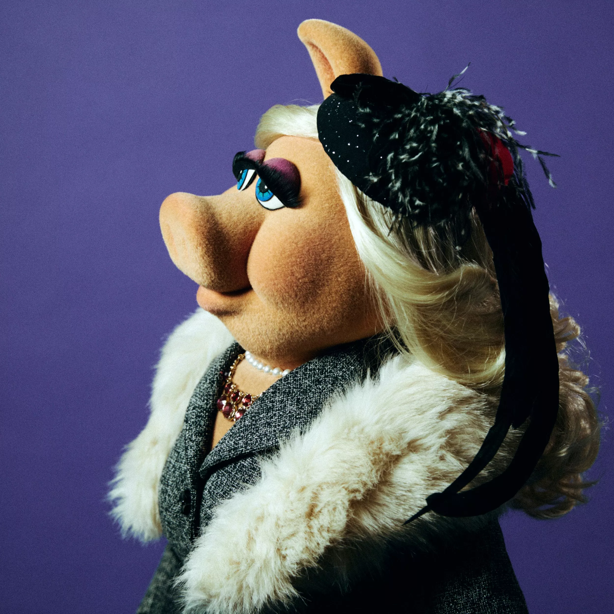
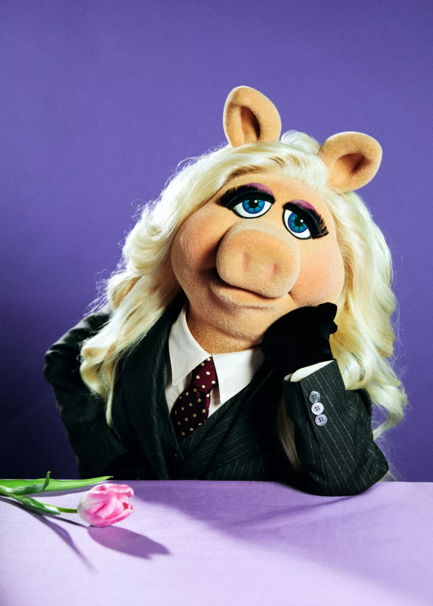

Miss Piggy is a prima-donna pig who is divinely destined for stardom, and nothing is going to stand in her way. Miss Piggy is a member of The Muppets
known for her breakout role in the sketch comedy television series The Muppet Show in 1976. She is known for her temperamental diva superstar personality, slim figure, buttery vocals, and iconic sense of style. Her public face is the soul of feminine charm, with all those she's worked with noting her professionalism, selflessness, flexibility, and her ability to stay calm at all times. Miss Piggy is also known for her on-again/off-again relationship with Kermit the Frog, although the pair have not been together officially since 2015.


There is only one gift you should accept on your first date... diamonds.by Miss Piggy.